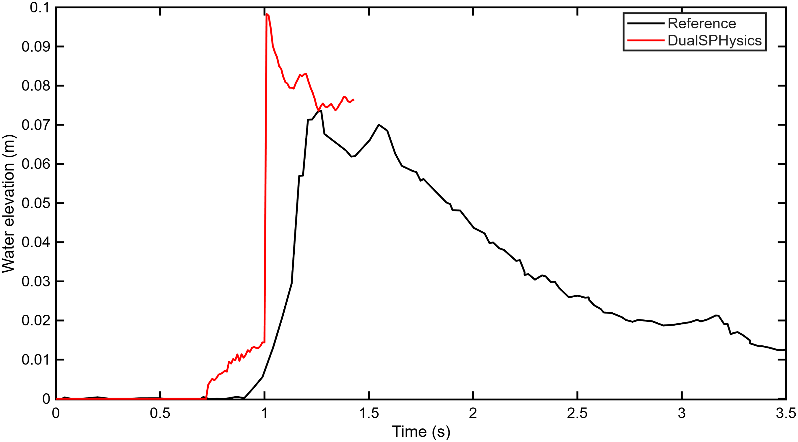
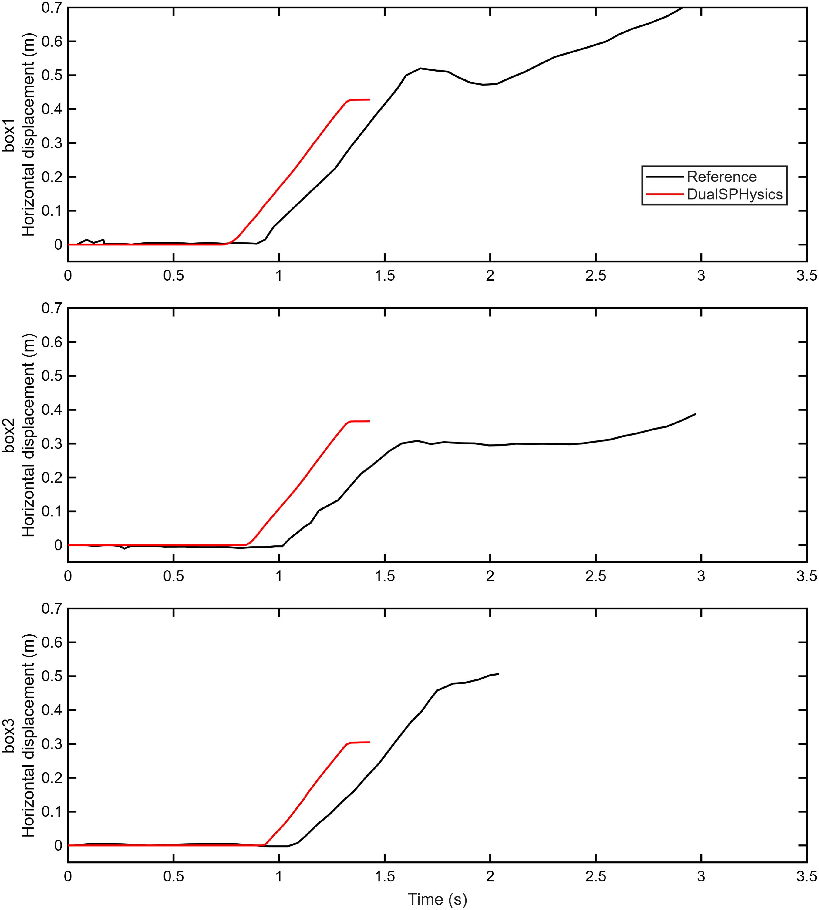

Dambreak Debris¶
Under review by Bonaventura Tagliafierro
This three-dimensional dam-break case examines the transport of three rigid floating bodies through a tank containing two fixed obstacles. Releasing an upstream water column produces a transient flood that interacts with the obstacles and the debris. The benchmark is associated with Albano et al. (2016), whose experiment includes two fixed obstacles and three transportable bodies. Fluid loading, rigid-body movement and contact interactions are relevant to the resulting water levels and debris paths.
The case is supplied at DualSPHysics_v6.0/examples/benchmarks/05_DambreakDebris. The current provisional configuration uses mixed boundary conditions (MIX) and Chrono rigid-body coupling. The intended comparisons are water elevation at two locations and the longitudinal centre-of-mass trajectories of the three bodies. Preliminary figures are available below; a completed numerical run and final scientific verification remain pending.
What's Covered in This Tutorial
- A dam-break reservoir released by a vertically moving gate
- Separate fixed-obstacle and floating-body definitions
- Particle geometry and geometry-based boundary normals
- Mixed boundary treatment with body-specific conditions
- Chrono contact models, material properties and internal substeps
- Water-elevation extraction and floating-body motion outputs
Video: To be updated for the approved benchmark configuration.
All XML blocks below are excerpts copied from DambreakDebris_Def.xml. They retain the original syntax, expressions, attributes and comments. Material values from the separate Floating_Materials.xml are identified explicitly in their own table. Excerpts are not a complete runnable XML file.
Case Configuration¶
Physical Setup¶
The case coordinate system has \(x\) along the tank, \(y\) across its width and \(z\) upwards, with the nominal bottom at \(z=0\):
| Component | Nominal configuration |
|---|---|
| Tank | 2.50 m long × 0.50 m wide × 0.30 m high |
| Initial reservoir | 0.50 m long, spanning the tank width, with 0.10 m water depth |
| Gate | At the downstream reservoir face, nominal thickness 0.03 m and height 0.15 m |
| Two fixed obstacles | Each 0.30 m × 0.15 m × 0.30 m |
| Three debris bodies | Each nominally 0.045 m × 0.118 m × 0.043 m, with initial lower height Dz0=0.01 m |
| Particle spacing | Dp=0.003 m |
The reservoir is initially upstream of the gate. The obstacles and three bodies lie downstream, outside the initial water box. The finite Y extent makes this a 3-D case; no periodic boundary is configured.
Markers and Object Roles¶
| Local identifier | Role | Chrono body explicitly declared |
|---|---|---|
mkfluid=0 |
Water | — |
mkbound=1 |
Prescribed moving gate | — |
mkbound=2 |
Tank walls and SPH bottom particles | — |
mkbound=3 |
Bottom contact proxy, with a small phantom particle body | Fixed bottom |
mkbound=10 |
Fixed obstacle 1 | — |
mkbound=11 |
Fixed obstacle 2 | Fixed building |
mkbound=61 |
Floating debris body 1 | Floating box61 |
mkbound=62 |
Floating debris body 2 | Floating box62 |
mkbound=63 |
Floating debris body 3 | Floating box63 |
The two fixed obstacles are distinct from the three transported bodies. A boundary represented in SPH is not automatically an explicitly configured Chrono collision body: the active Chrono list contains the bottom proxy, obstacle 11 and the three debris bodies. It does not declare the gate, tank walls or obstacle 10 as separate Chrono bodies.
Geometry Definition¶
Nominal Dimensions and Grid Alignment¶
<predefinition>
<!-- Nominal geometry -->
<!-- Tank -->
<newvarcte TankL="2.50" TankW="0.50" TankH="0.30" />
<!-- Water column -->
<newvarcte WaterL="0.50" WaterH="0.10" />
<!-- Gate -->
<newvarcte GateT="0.03" GateH="0.15" />
<!-- Buildings-->
<newvarcte B1x="1.40" B1y="0.33" />
<newvarcte B2x="1.95" B2y="0.06" />
<newvarcte BLx="0.30" BLy="0.15" BLz="0.30" />
<!-- Debris boxes -->
<newvarcte DLx="0.045" DLy="0.118" DLz="0.043" Dz0="0.01" />
<newvarcte D1x="1.3845" D1y="0.17" />
<newvarcte D2x="1.4925" D2y="0.162" />
<newvarcte D3x="1.5995" D3y="0.154" />
<newvarcte DebrisAngle="22" />
<!-- SPH resolution -->
<newvarcte L="0.06" />
<newvarcte Dp="0.003" />
<newvarcte TargetDistance="0.0004" />
<newvarcte DistDpValue="#TargetDistance/Dp" />
<!-- Tank and fluid definition -->
<newvar alpha="10*8.96e-7*998/(998*1.3*sqrt(3.0)*Dp)" />
</predefinition>
The current predefinition retains nominal geometry variables, but the active drawing commands use explicit positions and sizes. Dp=0.003 m is prescribed directly. TargetDistance=0.0004 m and DistDpValue=#TargetDistance/Dp define the collision-distance ratio. Initial rotations use explicit vertical-axis coordinates.
<definition dp="#Dp" units_comment="metres (m)">
<pointref x="0" y="0" z="0" />
<pointmin x="-0.2" y="-0.2" z="-0.2" />
<pointmax x="3" y="0.7" z="1" />
</definition>
The grid reference is (0,0,0), while generation bounds are (−0.2,−0.2,−0.2) to (3,0.7,1) m. They are not the same origin and must not be confused with nominal tank surfaces or verified particle extents.
Initial Water Column and Gate¶
The water and gate particle definitions in geometry/commands/mainlist are:
<!-- water -->
<setmkfluid mk="0" />
<drawbox>
<boxfill>solid</boxfill>
<point x="0" y="0" z="0" />
<size x="0.5" y="0.5" z="0.1" />
</drawbox>
<setfrdrawmode auto="true" />
<!-- gate mk=1 -->
<setmkbound mk="1" />
<drawbox>
<boxfill>left</boxfill>
<point x="#0.5" y="#0" z="#Dp" />
<size x="#0.03" y="#0.5" z="#0.15" />
<layers vdp="-0,-1,-2,-3,-4" />
</drawbox>
<!-- building 1 mk=10 -->
The solid water box extends from (0,0,0) through size (0.5,0.5,0.1) m. The gate uses local mkbound=1, a left-face draw beginning at (0.5,0,Dp) and layers −0,−1,−2,−3,−4. Its separate normal face begins at Z=4*Dp with layer offset 0.5. These particle and normal constructions must be distinguished.
Fixed Obstacles¶
<!-- building 1 mk=10 -->
<setmkbound mk="10" />
<drawbox>
<boxfill>solid</boxfill>
<point x="#1.40" y="#0.33" z="#0" />
<size x="#0.3" y="#0.15" z="#0.3" />
<layers vdp="-0.5,-1.5,-2.5" />
</drawbox>
<!-- building 2 mk=11 -->
<setmkbound mk="11" />
<drawbox>
<boxfill>solid</boxfill>
<point x="#1.95" y="#0.06" z="#0" />
<size x="#0.3" y="#0.15" z="#0.3" />
<layers vdp="-0.5,-1.5,-2.5" />
</drawbox>
<!-- box 1 -->
Obstacle 1 starts at (1.40,0.33,0) m and obstacle 2 at (1.95,0.06,0) m. Each active particle box is 0.30 × 0.15 × 0.30 m, with layers −0.5,−1.5,−2.5. Both are fixed boundaries; neither has a floating declaration.
Floating-Body Geometry¶
<!-- box 1 -->
<setmkbound mk="61" />
<drawbox>
<boxfill>solid</boxfill>
<point x="#1.3845" y="#0.17" z="0.01" />
<size x="#0.045" y="#0.118" z="#0.0425" />
<layers vdp="-0.5,-1.5,-2.5" />
</drawbox>
<!-- box 2 -->
<setmkbound mk="62" />
<drawbox>
<boxfill>solid</boxfill>
<point x="#1.4925" y="#0.162" z="#0.01" />
<size x="#0.045" y="#0.118" z="#0.0425" />
<layers vdp="-0.5,-1.5,-2.5" />
</drawbox>
<!-- box 3 -->
<setmkbound mk="63" />
<drawbox>
<boxfill>solid</boxfill>
<point x="#1.5995" y="#0.154" z="#0.01" />
<size x="#0.045" y="#0.118" z="#0.0425" />
<layers vdp="-0.5,-1.5,-2.5" />
</drawbox>
<!-- tank walls -->
| Body | Local boundary label | Nominal unrotated lower-corner \(x,y\) (m) |
|---|---|---|
| 1 | 61 | 1.3845, 0.170 |
| 2 | 62 | 1.4925, 0.162 |
| 3 | 63 | 1.5995, 0.154 |
All three active particle boxes use size 0.045 × 0.118 × 0.0425 m and start at Z=0.01 m. The predefinition's nominal DLz=0.043 differs from the active draw height of 0.0425 m; the drawing commands govern the particle geometry. Initial orientation is specified by:
<initials>
<rotateaxis mkbound="61" angle="22" anglesunits="degrees">
<axisp1 x="1.407" y="0.229" z="0" />
<axisp2 x="1.407" y="0.229" z="1" />
</rotateaxis>
<rotateaxis mkbound="62" angle="22" anglesunits="degrees">
<axisp1 x="1.515" y="0.221" z="0" />
<axisp2 x="1.515" y="0.221" z="1" />
</rotateaxis>
<rotateaxis mkbound="63" angle="22" anglesunits="degrees">
<axisp1 x="1.622" y="0.213" z="0" />
<axisp2 x="1.622" y="0.213" z="1" />
</rotateaxis>
</initials>
Each body is rotated by 22° about its explicitly specified vertical axis. The axis coordinates are geometric definitions, not replacements for the generated mass-centre metadata.
Tank Boundaries and Bottom Proxy¶
<!-- tank walls -->
<setdrawmode mode="full" />
<setmkbound mk="2" />
<drawbox>
<boxfill>bottom|back|front|left|right</boxfill>
<point x="#0" y="#0" z="#0" />
<size x="#2.5" y="#0.5" z="0.3" />
<layers vdp="0,1,2,3" />
</drawbox>
<!-- phantom body for bottom 3 -->
<setactive drawpoints="1" drawshapes="0" />
<setmkbound mk="3" />
<drawbox>
<boxfill>solid</boxfill>
<point x="#0" y="#0" z="#0" />
<size x="#Dp" y="#Dp" z="#Dp" />
</drawbox>
<setfrdrawmode auto="false" />
mkbound=2 supplies tank particles with layers 0,1,2,3. The small solid mkbound=3 box begins at (0,0,0) with dimensions (Dp,Dp,Dp); it supplies the bottom contact proxy rather than the whole tank floor. Chrono reads the separate bottom VTK model.
Geometry for Boundary Normals¶
Before particle generation, mainlist runs GeometryForNormals. That list draws nominal obstacle, debris, gate and tank surfaces with drawpoints=0, drawshapes=1; its hdp output supplies the normal geometry. A separate floor surface is written with shapeout file="Floor".
<normals active="true">
<norgeometry comment="Define initial configuration of normals before applying other configurations">
<geometryfile file="[CaseName]_hdp_Actual.vtk" comment="File with boundary geometry (VTK format)" />
<distanceh v="3" comment="Maximum orthogonal distance (H*value) to compute normals data (default=2)" />
</norgeometry>
</normals>
The active norgeometry configuration reads [CaseName]_hdp_Actual.vtk with search distance 3H. This generated normals file is distinct from the five supplied fine VTK meshes used by Chrono. No VTK file is imported to replace the primitive particle boxes in this case definition.
Gate Motion and Floating-Body Properties¶
Gate Opening¶
<motion>
<objreal ref="1">
<begin mov="1" start="0.0" finish="2.2" />
<mvrect id="1" duration="1.5">
<vel x="0" y="0" z="0.11" units_comment="m/s" />
</mvrect>
</objreal>
</motion>
objreal ref=1 selects the gate. Movement 1 starts at simulation time 0 and prescribes velocity \((0,0,0.11)\) m/s for a 1.5 s motion block. The enclosing event has finish=2.2 s; this is a separate event limit, not a 2.2 s movement duration. The gate rises from the reservoir's downstream face and releases the water.
Mass, Inertia and Motion Controls¶
<floatings>
<floating mkbound="61" property="pvc" >
<massbody value="0.025" />
<inertia x="3.2860e-5" y="8.0708e-6" z="3.3227e-5" />
</floating>
<floating mkbound="62-63" property="pvc">
<massbody value="0.025" />
<inertia x="3.2860e-5" y="8.0708e-6" z="3.3227e-5" />
</floating>
</floatings>
The first definition selects body 61; the second applies the same values separately to bodies 62 and 63. Each body has mass 0.025 kg, material property pvc, and diagonal inertia components \((3.2860\times10^{-5},\ 8.0708\times10^{-6},\ 3.3227\times10^{-5})\) kg·m². These supplied values are retained, rather than replaced with box-formula estimates.
The case definition supplies no explicit <center>, translation/rotation restrictions, imposed initial linear/angular velocities or mechanical links for these bodies. Generated floating records must be checked for the actual centre and initial-state metadata before quantitative trajectory comparisons. The rotation axes above must not be substituted for verified mass centres.
<parameter key="RigidAlgorithm" value="CHR" comment="Rigid Algorithm: FREE:collision-free, SPH, DEM, CHR:Chrono collision (default=SPH)" />
<parameter key="FtPause" value="0.7" comment="Time to freeze the floatings at simulation start (warmup) (default=0)" units_comment="seconds" />
RigidAlgorithm=CHR selects Chrono. FtPause=0.7 freezes floating-body movement at the start of the simulation while the prescribed gate motion begins at \(t=0\). The GPU solver applies the pause to the floating update and Chrono call; it does not postpone the gate's motion definition. Gate opening, floating release and experimental time origin are distinct references, and no experimental time shift is inferred from this parameter.
Chrono Coupling and Contact Geometry¶
DualSPHysics computes fluid–body interaction and transfers the resulting linear/angular input to Chrono. Chrono updates the rigid-body state and resolves its configured solid contacts; the floating boundary particles follow the updated state. The three debris bodies can therefore respond to fluid loading and configured contacts. This does not establish the accuracy of the current contact model.
Chrono Configuration¶
<chrono>
<savedata value="0.01" comment="Saves CSV with data exchange for each time interval (0=all steps)" />
<schemescale value="1" comment="Scale used to create the initial scheme of Chrono objects (default=1)" />
<ompthreads value="3" comment="Number of Chrono OpenMP threads (default=1)" />
<collision activate="true">
<distancedp value="#DistDpValue" comment="Allowed collision overlap according Dp (default=0.5)" />
<contactmethod value="0" comment="Contact method type. 0:NSC (Non Smooth Contacts), 1:SMC (SMooth Contacts). (default=0)" />
</collision>
<timestepper>
<substepping mode="auto" comment="off|fixed|auto. When off, one Chrono step is used per DualSPHysics step.">
<maxdt value="5e-5" comment="Maximum internal Chrono dt. 0 uses DualSPHysics dt." />
<maxsteps value="100" comment="Maximum Chrono substeps per DualSPHysics step." />
<maxdispdp value="0" comment="Adaptive limit based on body displacement / dp. 0 disables it." />
<maxrot value="0" comment="Adaptive limit based on body rotation [rad]. 0 disables it." />
</substepping>
</timestepper>
<!-- <bodyfloating id="box" mkbound="61-62" modelfile="AutoActual" /> -->
<!-- <bodyfixed id="building" mkbound="11" modelfile="AutoActual"/> -->
<!-- <bodyfixed id="walls" mkbound="2" modelfile="AutoActual" /> -->
<!-- <bodyfixed id="bottom" mkbound="3" modelfile="CaseDambreakDebris_Floor_Actual.vtk" /> -->
<bodyfixed id="bottom" mkbound="3" modelfile="bottom_mkb0003_fine.vtk" />
<bodyfloating id="box61" mkbound="61" modelfile="box_mkb0061_fine.vtk" />
<bodyfloating id="box62" mkbound="62" modelfile="box_mkb0062_fine.vtk" />
<bodyfloating id="box63" mkbound="63" modelfile="box_mkb0063_fine.vtk" />
<bodyfixed id="building" mkbound="11" modelfile="building_mkb0011_fine.vtk" />
</chrono>
- Contacts: collision is enabled, with
contactmethod=0selecting NSC (Non Smooth Contacts). - Collision distance:
TargetDistance=0.0004m andDistDpValue=#TargetDistance/Dpgivedistancedp≈0.1333333333. The XML expresses the allowed overlap relative to particle spacing; it is not a body dimension or a measured penetration result. - Internal integration: automatic substepping requests
maxdt=5e-5s, with at most 100 Chrono substeps per DualSPHysics step. Displacement and rotation adaptive limits are disabled by their zero values. Actual step sizes and cap behaviour require runtime diagnostics. - Output and threads:
savedata=0.01requests exchange-data output at that interval;ompthreads=3sets Chrono's thread count andschemescale=1its initial scheme scale. - Bodies: the active five declarations map the three floatings and two fixed collision models. Commented-out alternatives are inactive.
For XML configuration details, see the Chrono coupling guide.
Geometry Input Files¶
| Supplied VTK model | Active Chrono association |
|---|---|
bottom_mkb0003_fine.vtk |
Fixed bottom, mkbound=3 |
building_mkb0011_fine.vtk |
Fixed building, mkbound=11 |
box_mkb0061_fine.vtk |
Floating box61, mkbound=61 |
box_mkb0062_fine.vtk |
Floating box62, mkbound=62 |
box_mkb0063_fine.vtk |
Floating box63, mkbound=63 |
These supplied meshes provide the explicit Chrono model geometry. Particle generation and normals use the primitive drawing commands and their generated geometry. BoundaryVTK's later AutoActual visualisation request is a separate use of generated case geometry, not a declaration that the fine contact meshes serve every geometry task.
The BAT copies the supplied *.vtk files to the output directory before GenCase. The Chrono interface prepares geometry under chrono_objs/ from the selected models. No mesh is manually translated, rotated or substituted in the Chrono declarations; initial particle/body configuration and collision-model alignment need confirmation from the generated case and scheme. The input VTK files have not been converted or visualised here.
Material Properties¶
The case imports the separate material library and associates properties with its boundaries:
<properties>
<propertyfile file="Floating_Materials.xml" path="materials" />
<links>
<link mkbound="1" property="steel" comment="Property for the gate" />
<link mkbound="2" property="glass" comment="Property for the walls" />
<link mkbound="3" property="pvc" imposefric="true" comment="Property for the bottom" /> ## needs to be bakelite
<link mkbound="10" property="steel" comment="Property for the building1" />
<link mkbound="11" property="steel" comment="Property for the building2" />
</links>
</properties>
The following values are read from Floating_Materials.xml, not from the main XML's numerical-parameter block:
| Property | Assigned labels | Young modulus (N/m²) | Poisson ratio | Restitution coefficient | Kfric |
|---|---|---|---|---|---|
steel |
Gate 1 and obstacles 10–11 | 210000000000.0 | 0.30 | 0.80 | 0.45 |
glass |
Tank 2 | 65000000000.0 | 0.23 | 0.85 | 0.40 |
pvc |
Bottom proxy 3 and floatings 61–63 | 3000000000.0 | 0.30 | 0.55 | 0.55 |
The active bottom property is pvc; the trailing source text “needs to be bakelite” conflicts with that assignment and requires maintainer review. It does not change the active property to bakelite. The material file also retains stray --> text after its PVC entries; no simulation input is repaired here.
Kfric is the supplied kinetic-friction coefficient. No independent Sfric value is declared in these properties; the current solver copies the available kinetic value when static friction is absent. Young modulus and Poisson ratio are library entries, not a separately prescribed NSC contact stiffness. The source's selected NSC model must not be described as an SMC stiffness/damping calibration. No additional contact coefficients or validated collision performance are assumed.
Boundary and Numerical Configuration¶
Mixed Boundary Treatment¶
<parameter key="Boundary" value="MIX" comment="Boundary method: DBC, mDBC, MIX:MixBC (default=DBC)" />
<parameter key="SlipMode" value="NS" comment="Slip mode for mDBC: NS:No-slip, FS:Free slip, V0:TanVel=0, M22:mDBC 2022 (default=NS)" />
<parameter key="NoPenetration" value="Y" comment="Activate No-Penetration option for mDBC: Y/N (default=N)" />
Boundary=MIX activates the body-specific configuration below:
<mixboundary>
<!-- *** boundtype: DBC, MDBC_V0 (Old mDBC), MDBC_T0 (mDBC2 tanvel=0), *** -->
<!-- *** MDBC_NS (mDBC2 No-slip), MDBC_FR (mDBC2 Free slip). *** -->
<!-- *** nopenetration: 1/0 Activate No-Penetration option for TanVel=0, *** -->
<!-- *** No-slip or Free-slip mDBC. *** -->
<!-- *** mkbound: mkbound value or list of values (2,5,7-8). *** -->
<default boundtype="MDBC_T0" nopenetration="1" />
<bcmk mkbound="61-63" boundtype="MDBC_NS" nopenetration="0" />
<!-- <bcmk mkbound="" boundtype="MDBC_FR" nopenetration="1" /> -->
</mixboundary>
| Boundary group | Effective mixed-boundary selection |
|---|---|
| Gate, tank, bottom proxy and fixed obstacles | Default MDBC_T0 (zero tangential velocity), nopenetration=1 |
| Floating bodies 61–63 | MDBC_NS (no-slip), nopenetration=0 |
The specific floating assignment overrides the mixed default. The parameter entries SlipMode=NS and NoPenetration=Y remain as supplied, but do not justify assigning identical settings to every marker when mixboundary specifies these groups. The case is documented as MIX, not as a pure uniform mDBC setup.
Constants, Kernel and Viscosity¶
<constantsdef>
<gravity x="0" y="0" z="-9.81" comment="Gravitational acceleration" units_comment="m/s^2" />
<rhop0 value="998" comment="Reference density of the fluid" units_comment="kg/m^3" />
<rhopgradient value="2" comment="Initial density gradient 1:Rhop0, 2:Water column, 3:Max. water height (default=2)" />
<hswl value="0" auto="true" comment="Maximum still water level to calculate speedofsound using coefsound" units_comment="metres (m)" />
<gamma value="7" comment="Polytropic constant for water used in the state equation" />
<speedsystem value="0" auto="true" comment="Maximum system speed (by default the dam-break propagation is used)" />
<coefsound value="20" comment="Coefficient to multiply speedsystem" />
<speedsound value="60" auto="false" comment="Speed of sound to use in the simulation (by default speedofsound=coefsound*speedsystem)" />
<coefh value="1.3" comment="Coefficient to calculate the smoothing length (h=coefh*sqrt(3*dp^2) in 3D)" />
<cflnumber value="0.2" comment="Coefficient to multiply dt" />
</constantsdef>
Gravity is \((0,0,-9.81)\) m/s², reference fluid density is 998 kg/m³ and rhopgradient=2 selects a water-column initial density gradient. The sound speed is explicitly 60 m/s with auto=false; coefsound=20 is present but is not a reason to replace that explicit sound speed. coefh=1.3 and cflnumber=0.2 retain the configured smoothing-length and time-step coefficients.
<parameter key="StepAlgorithm" value="SYM" comment="Step Algorithm: SYM:Symplectic, VER:Verlet (default=SYM)" />
<parameter key="VerletSteps" value="40" comment="Verlet only: Number of steps to apply Euler timestepping (default=40)" />
<parameter key="Kernel" value="WC2" comment="Interaction Kernel: WC2:WendlandC2, WC6:WendlandC6 (default=WC2)" />
<parameter key="ViscoTreatment" value="ART" comment="Viscosity formulation: LAM:Laminar, ART:Artificial (default=LAM)" />
<parameter key="Visco" value="#8.96e-7*10/(50*H)" comment="Viscosity value. Typically 0.01 for Artificial and 1e-6 m^2/s (water kinematic viscosity) for Laminar" />
<parameter key="ViscoBoundFactor" value="1" comment="Multiply viscosity value with boundary (default=1)" />
<parameter key="Turbulence" value="NO" comment="Turbulence model: NO:None, SPS:Sub-particle scale (default=NO)" />
The active integrator is symplectic (SYM), so VerletSteps=40 is a companion setting for the unselected Verlet integrator. The kernel is Wendland C2 (WC2). Artificial viscosity (ART) uses the exact source expression #8.96e-7*10/(50*H), with boundary multiplier 1. It is not replaced with a constant coefficient or interpreted as a laminar-viscosity setting. The resolved expression and generated constants should be checked in case metadata; no numerical value is guessed for H. Turbulence is NO.
Density Diffusion and Shifting¶
<parameter key="DensityDT" value="FO" comment="Density Diffusion Term: NO:None, FO:Fourtakas (default=NO)" />
<parameter key="DensityDTvalue" value="0.1" comment="DDT value (default=0.1)" />
<parameter key="DivCleanKp" value="0" comment="Kappa parameter for Divergence Cleaning (equal to coefsound) (default=0)" />
<parameter key="Shifting" value="1" comment="Shifting mode 0:None, 1:Ignore bound, 2:Ignore fixed, 3:Full, 4:Full advanced (default=0)" />
<parameter key="ShiftCoef" value="-0.2" comment="Coefficient for standard shifting computation (default=-2)" />
<parameter key="ShiftTFS" value="2.75" comment="Threshold to detect free surface. Typically 1.5 for 2D and 2.75 for 3D (default=0)" />
<parameter key="ShiftAdvCoef" value="-0.01" comment="Coefficient for advanced shifting computation (default=-0.01)" />
<parameter key="ShiftAdvALE" value="N" comment="ALE formulation for advanced shifting: Y/N (default=N)" />
<parameter key="ShiftAdvNCPress" value="N" comment="Non conservative pressure formulation for advanced shifting: Y/N (default=N)" />
DensityDT=FO selects Fourtakas density diffusion with coefficient 0.1; see Fourtakas et al. (2019). DivCleanKp=0 disables divergence cleaning. Standard shifting mode 1 (Ignore bound) is active, with the case-specific ShiftCoef=-0.2 and ShiftTFS=2.75. Advanced-shifting settings are present but are not active for mode 1.
Simulation Duration and Domain¶
<parameter key="TimeMax" value="3.5" comment="Time of simulation" units_comment="seconds" />
<parameter key="TimeOut" value="0.01" comment="Time out data" units_comment="seconds" />
<parameter key="RhopOutMin" value="700" comment="Minimum density valid (default=700)" units_comment="kg/m^3" />
<parameter key="RhopOutMax" value="1300" comment="Maximum density valid (default=1300)" units_comment="kg/m^3" />
<parameter key="WrnPartsOut" value="Y" comment="Active warning according to number of out particles: Y/N (default=Y)" />
<parameter key="MinFluidStop" value="0.1" comment="Minimum proportion of initial fluid particles to continue the simulation 0:Never stops, 0.1:Stops when fluid drops to 10%. (default=0)" />
The simulation is configured for 3.5 s with regular output every 0.01 s. MinFluidStop=0.1 permits early stopping when the remaining fluid drops below 10% of the initial fluid population. SavePosDouble=N is retained; initial/minimum time-step values of zero retain their automatic rules, while DtFixed=0 and DtFixedFile=NONE disable a fixed-step schedule.
<simulationdomain comment="Defines domain of simulation (default=Uses minimum and maximum position of the generated particles)">
<posmin x="default" y="default" z="default" comment="e.g.: x=0.5, y=default-1, z=default-10%" />
<posmax x="default" y="default" z="default + 20%" />
</simulationdomain>
Default solver bounds follow the generated particle extents, with maximum Z extended by 20%. No generated particle count or final domain size is inferred from these input expressions.
Numerical Measurements¶
Free-surface Elevation at h1 and h2¶
The complete source text of elevation.txt is:
| Numerical scan | \(x\) (m) | \(y\) (m) | Requested \(z\) samples |
|---|---|---|---|
| h1 | 1.365 | 0.39 | 0 to 0.099 m, at 0.001 m increments |
| h2 | 1.915 | 0.15 | 0 to 0.099 m, at 0.001 m increments |
Each POINTSLIST block gives an origin, increments and counts: one X sample, one Y sample and 100 Z samples. These are vertical scans, not single measurement points. MeasureTool's active -elevation:0.5 option extracts surface elevation using the supplied threshold coefficient; the resulting time series comes from the recorded particle data.
The exact numerical CSV filenames, headers and treatment of any scan-limit result remain to be checked after an authorised run. Numerical h1/h2 labels do not, by themselves, prove experimental probe-coordinate equivalence.
Floating-Body Motion¶
FloatingInfo selects global MK 71–73. The generated case metadata maps these to local boundary labels 61–63, respectively; check the corresponding generated records and actual output headers when selecting each body history.
FloatingInfo reads recorded floating-body information, including the body centre, rather than measuring particle trajectories from a VTK animation. Its -savedata output supports centre-position histories; the documented tool default includes motion data. For the intended xCM comparison, inspect the actual longitudinal centre coordinate and distinguish it from displacement relative to an initial position. Check output MK, body identity, coordinate origin, units and timestamps before matching xCM1–xCM3. No generated filenames or complete 3-D experimental trajectories are assumed.
Running the Simulation¶
Windows GPU¶
The supplied script is wDambreakDebris_win64_GPU.bat, intended to run from the case directory. Relevant definitions and its input-copy preparation are:
set dirbin=../../../bin/windows
set gencase="%dirbin%/GenCase_win64.exe"
set dualsphysicscpu="%dirbin%/DualSPHysics6.0CPU_win64.exe"
set dualsphysicsgpu="%dirbin%/DualSPHysics6.0_win64.exe"
set boundaryvtk="%dirbin%/BoundaryVTK_win64.exe"
The source BAT offers a menu when an output folder already exists; its simulation branch removes that folder before this preparation. Preserve wanted results before choosing that branch. The fragments below document the source commands; no execution is implied.
GenCase and Solver¶
rem Executes GenCase to create initial files for simulation.
%gencase% %name%_Def %dirout%/%name% -save:all
if not "%ERRORLEVEL%" == "0" goto fail
rem Executes DualSPHysics to run the SPH simulation.
%dualsphysicsgpu% -gpu %dirout%/%name% %dirout%
if not "%ERRORLEVEL%" == "0" goto fail
GenCase uses the DambreakDebris_Def case prefix and writes the generated case to DambreakDebris_out/DambreakDebris. The GPU solver uses the generated prefix and root output directory shown by the BAT.
Particle and Boundary Visualisation¶
rem Executes PartVTK to create VTK files with fluid particles.
set dirout2=%dirout%\particles
%partvtk% -dirdata %diroutdata% -savevtk %dirout2%/PartFluid -onlytype:-all,+fluid -continue:1
if not "%ERRORLEVEL%" == "0" goto fail
rem Executes PartVTKOut to create VTK files with excluded particles.
%partvtkout% -dirdata %diroutdata% -savevtk %dirout2%/PartFluidOut -SaveResume %dirout2%/_ResumeFluidOut
if not "%ERRORLEVEL%" == "0" goto fail
rem Executes BoundaryVTK to create VTK files with floating-body geometry.
set dirout2=%dirout%\boundary
%boundaryvtk% -loadvtk AutoActual -motiondata %diroutdata% -savevtkdata %dirout2%/Box -onlytype:floating
if not "%ERRORLEVEL%" == "0" goto fail
PartVTK exports fluid particles to particles/PartFluid with -onlytype:-all,+fluid, retaining -continue:1. BoundaryVTK reads generated AutoActual geometry and recorded motion, requesting floating-body visualisation at boundary/Box. This visualisation output is distinct from the fine Chrono contact models.
Floating Information and Water Elevation¶
rem Executes FloatingInfo to export the selected floating-body data to CSV files.
set dirout2=%dirout%\floatinginfo
%floatinginfo% -dirdata %diroutdata% -onlymk:71-73 -savedata %dirout2%/DebrisMotion
if not "%ERRORLEVEL%" == "0" goto fail
rem Executes MeasureTool to export the selected measurements to CSV files.
set dirout2=%dirout%\measure
%measuretool% -dirdata %diroutdata% -points elevation.txt -onlytype:-all,+fluid -elevation:0.5 -savecsv %dirout2%/WaterHeight
if not "%ERRORLEVEL%" == "0" goto fail
The active order is GenCase → GPU solver → PartVTK → PartVTKOut → BoundaryVTK → FloatingInfo → MeasureTool, with the source error checks retained. IsoSurface is commented out.
The current BAT uses -dirdata for FloatingInfo and MeasureTool, with separate floatinginfo/DebrisMotion and measure/WaterHeight prefixes. Every active utility has an error check; runtime success remains separate from static verification.
Expected Output Organisation¶
| Path relative to the case directory | Source-established purpose |
|---|---|
DambreakDebris_out/ |
Generated case, solver output and copied fine VTK inputs |
DambreakDebris_out/data/ |
Recorded particle, motion and floating information |
DambreakDebris_out/particles/PartFluid |
PartVTK output prefix |
DambreakDebris_out/boundary/Box |
BoundaryVTK floating-geometry output prefix |
DambreakDebris_out/floatinginfo/DebrisMotion, DambreakDebris_out/measure/WaterHeight |
Separate FloatingInfo and MeasureTool prefixes |
DambreakDebris_out/chrono_objs/ |
Model geometry prepared by the Chrono interface |
DambreakDebris_out/ChronoExchange_mkbound_61.csv through _63.csv |
Expected per-floating exchange diagnostics established by the interface's naming rule |
Chrono exchange diagnostics include timestamps, internal step information and the returned body centre, separately from FloatingInfo exports. Existing output is available, but Run.out reports NaN values in the floating-body calculation and termination in FtCheckValues. The available numerical curves end before the requested 3.5 s; no completed run is claimed.
Final Release Scripts¶
The release plan includes Windows GPU and CPU BAT files and Linux GPU and CPU SH files. Only the currently supplied Windows GPU BAT has been verified statically for this benchmark. Final filenames and contents of the remaining variants will be reviewed after the source configuration is frozen.
Experimental Reference Data¶
The current experimental comparison workbook is reference/Experimental_Data_Albano_2016.xlsx. The preserved original is reference/Experimental_Data_ALBANO_OLD.xlsx; it is not a second numerical dataset.
Water-elevation Sheet h¶
The comparison retains experimental h1 with its own time record. No h2 comparison figure is currently available. Verify the experimental datum and correspondence with the configured numerical scan before drawing accuracy conclusions.
Longitudinal Centre-of-mass Sheet xCM¶
The comparison contains the three experimental longitudinal displacement histories with separate time columns. Displacement is position relative to the respective initial X value. The original workbook preserves the position data; numerical position must be put on the same displacement datum before comparison. Other historical workbook columns must not be treated as additional experimental curves without identification.
Results and Validation¶
Water Elevation¶

Preliminary figure. The numerical results and their comparison with the reference data are pending final verification.
The comparison must identify the selected experimental series, verified probe correspondence, elevation datum and time reference. The workbook's cm/m conversion does not establish whether an experimental ordinate is absolute water level, depth or elevation relative to a datum. No arbitrary water-level subtraction or time shift is applied.
Floating-body Trajectories¶

Preliminary figure. The numerical results and their comparison with the reference data are pending final verification.
The intended channels are xCM1, xCM2 and xCM3, after verifying numerical MK/body identity and experimental channel mapping. Use compatible longitudinal centre coordinates; do not compare a displacement directly with a position or invent transverse, vertical or rotational experimental curves. The gate starts at 0 and floating release is paused until 0.7 s, but neither fact alone establishes experimental time alignment.
Figure pending. Numerical and experimental water-elevation comparison at h2, after confirming the intended experimental channel and probe correspondence.
No completed-run agreement, convergence or physical validation is claimed. Final figures and the approved video remain pending.
References¶
◆ Albano, R., Sole, A., Mirauda, D., & Adamowski, J. (2016). Modelling large floating bodies in urban area flash-floods via a Smoothed Particle Hydrodynamics model. Journal of Hydrology, 541, 344–358. https://doi.org/10.1016/j.jhydrol.2016.02.009
◆ Fourtakas, G., Domínguez, J. M., Vacondio, R., & Rogers, B. D. (2019). Local Uniform Stencil (LUST) boundary condition for arbitrary 3-D boundaries in parallel smoothed particle hydrodynamics (SPH) models. Computers & Fluids, 190, 346–361. https://doi.org/10.1016/j.compfluid.2019.06.009